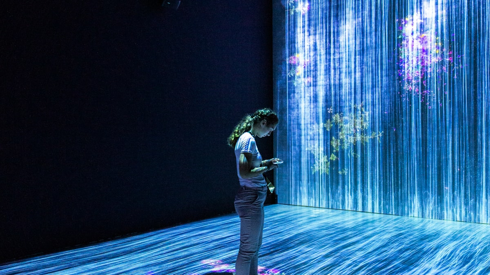

Guardrails: Yapay Zekâ Çıktısını Üretimde Sınırlamak

Bir dil modeli olasılıksal bir sistemdir; aynı girdi her zaman aynı çıktıyı vermez ve hiçbir talimat yüzde yüz bağlayıcı değildir. Üretimde bu belirsizliği yönetmenin yolu daha iyi bir prompt yazmak değil, modelin etrafına deterministik bir katman koymaktır. Guardrails tam olarak budur.
İçindekiler
Neden prompt yetmez
"Asla tıbbi tavsiye verme" talimatı çoğu zaman çalışır. Çoğu zaman yeterli değildir. Kullanıcı yeterince ısrarcıysa, soru yeterince dolaylıysa ya da bağlam yeterince uzunsa talimat aşınır. Bu bir kusur değil, olasılıksal sistemlerin doğasıdır.
Guardrails, kritik kuralları modelin iyi niyetine bırakmak yerine kod düzeyinde uygular.
Girdi tarafı
- Kapsam kontrolü: Soru ürünün alanı dışındaysa modele hiç gitmez.
- Kişisel veri temizliği: Kimlik ve iletişim bilgileri maskelenir.
- Injection savunması: Kullanıcı ve belge içeriği, sistem talimatından net biçimde ayrılır.
Çıktı tarafı
| Kontrol | Ne yakalar | Maliyet |
|---|---|---|
| Şema doğrulama | Bozuk yapı, eksik alan | Neredeyse sıfır |
| Kural tabanlı filtre | Yasaklı ifade, biçim | Çok düşük |
| Sınıflandırıcı model | Zararlı içerik | Orta |
| Gerçeklik kontrolü | Kaynakta olmayan iddia | Yüksek |
Sıralama önemlidir: ucuz ve deterministik kontroller önce çalışır. Şema doğrulaması başarısız olduğunda pahalı bir denetleyici modeli çağırmanın anlamı yoktur.
Gerçeklik kontrolü, RAG kullanan sistemlerde en değerli guardrail'dir: üretilen her iddianın getirilen kaynakta karşılığı var mı? Yoksa cevap ya düzeltilir ya reddedilir.
Yanlış pozitif dengesi
Aşırı sıkı bir guardrail, ürünü kullanılamaz hâle getirir. Meşru soruları reddeden bir asistan, yanlış cevap veren bir asistandan daha hızlı terk edilir. Bu yüzden guardrail'ler de tıpkı modeller gibi ölçülmelidir: kaç meşru istek engellendi, kaç zararlı istek geçti?
Başarısızlığı tasarlamak
Guardrail tetiklendiğinde ne olacağı bir ürün kararıdır. Üç seçenek vardır: reddetmek, düzeltmek ya da insana devretmek. Sessizce boş cevap dönmek en kötüsüdür. Kullanıcıya ne olduğunu ve ne yapabileceğini söyleyen bir mesaj, güveni korur.
Sık sorulanlar
Guardrail gecikmeyi ne kadar artırır?
Deterministik kontroller milisaniyeler alır. Model tabanlı kontroller bir çağrı daha ekler; kritik olmayan yerlerde paralel ya da örnekleme yoluyla çalıştırılabilir.
Modelin kendisi kendini denetleyebilir mi?
Kısmen. Aynı model kendi hatasını tekrarlayabilir; bağımsız bir kontrol katmanı daha güvenilirdir.
Nereden başlamalı?
Şema doğrulama ve kapsam kontrolünden. En ucuz iki kontrol, üretimdeki hataların büyük kısmını yakalar.
Guardrails, modeli kısıtlamak için değil; ürünü öngörülebilir kılmak içindir. Devamı için prompt injection ve yapılandırılmış çıktı yazılarına bakabilirsiniz.